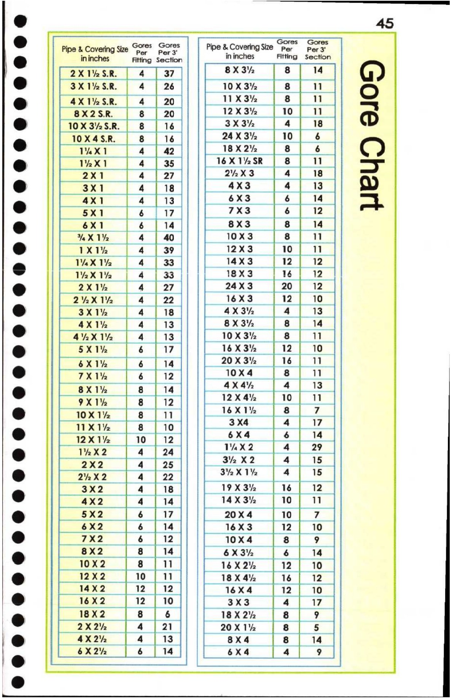

45. Gore Chart

@
©
e Pipe & Covering
kon Siz Gores
° : eth rs Gores
| 2X1%S.R. | Ss = = | 8 | 14 | ( , )
[e) | 3XTRSR. | rs Ea —- ist
@ | AXT2SR. | Te — ‘a =a Aes .
ee tet an aim
10 S.R. 8X32 ane
X35. cs 2 | 4 | 18 |
10X3%2SR. | 8 | 16 | == : came
e@ lem | 4 | 42 | . : : Hes ¢ )
: 3%
1% :
, ln XK
; : 24X 3 3
18 X 2° 2
Prefs |Paae tet]
= 2%2X3
; hal | eee
mb fae | | xa Pe
| 1Xi% | | 39 | | __12x%3) J ew
2 "ORE == ;
: = Ye | 4 | 33 |
pax Ti] XI | 4 | | 16 |
e = ees a | 12 | 10 |
P aiecee
is rex | 12 |
~ my Kae 1.4 | 13 | | 10X3% |
z 4X 3% c
8 $x1h_| iW Hed ; == : | 16 | ff
/ a oe : . HE :
@ —8X1% | 12 zm " |
9x1 | | 14 | im ie
* ox te | pete] v8 Ls | |
(2) | 12x Xl u = :
‘ X42
s 16 X 12
|e | 10] 3X4 ccEe
@ | 24x2 | X2 EME) : :
wh x2 | 4 |
2 Yo X2
| 34Xe | Xk | 4 [15 |
es | 4 | ae 9X 3% Lae
=a wae | 14X3% | 10 |
® axe sa] | aa
pa | 18xX4% | 16 | 12 |
: 7
$ X 3%
betel) (seep
@ | een Hs Fs be
. 4X Ss
2
@ 6X22 : a |
d Xi | 8 |
oxen | 6 [14] oK4
4
cams